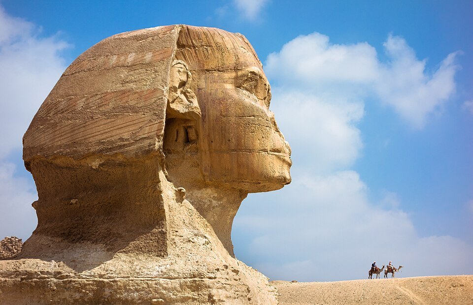

Art history, from the very first image
Humans were making art tens of thousands of years before writing. Start in the caves of the Stone Age and follow the story forward.
Begin: Prehistoric artExplore the timelineThe journey
~100,000–2000 BCEPrehistoric art~3500–330 BCEAncient Near East~3100–30 BCEAncient Egypt~900 BCE–476 CEAncient Greece and Rome~300–1400 CEMedieval art~1400–1600Renaissance~1600–1780Baroque and Rococo~1780–1900The 19th century~1900–1970Modern art~1970–todayContemporary art
Featured works

c. 2500 BCEGreat Sphinx of Giza
Unknown artist · Sculpture
 447–432 BCE
447–432 BCEThe Parthenon
Phidias · Architecture
 c. 1503–19
c. 1503–19Mona Lisa
Leonardo da Vinci · Painting
 c. 1831
c. 1831The Great Wave off Kanagawa
Katsushika Hokusai · Print & Drawing
 1889
1889The Starry Night
Vincent van Gogh · Painting
1937Guernica
Pablo Picasso · Painting
Browse
Regions
Africa, Asia, the Americas, Oceania.
Movements
28 styles from Gothic to digital art.
Artists
51 profiles.
Works
78 featured artworks.
Themes
Religion, power, nature, the body, technology.
Techniques
Fresco, oil, bronze, printmaking and more.
Learn
Glossary, how-to guide and quizzes.
Did you know? A pig painted in a cave in Sulawesi has been dated to at least 45,500 years ago, among the oldest known figurative art.